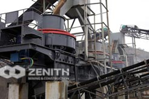

Products
As a leading global manufacturer of crushing, grinding and mining equipments, we offer advanced, reasonable solutions for anyel size-reduction requirements including quarry, aggregate, and different kinds of minerals. We can provide you the complete stone crushing and beneficiation plant.We also supply stand-alone crushers, mills and beneficiation machines as well as their spare par.
-
Quarry Crusher Machine
It is newly designed and improved by our experts on basis of their more than 20 years' crusher manufacturing and design experience.
-

Raymond Mill
It is newly designed and improved by our experts on basis of their more than 20 years' crusher manufacturing and design experience.
-

Mobile Crusher
The mobile crushing plant has the advantages of easy transportation, low transportation cost, flexible configuration, convenient maintenance etc.
-

Portable Crusher
The portable crusher can be operated as independent units, or as two-stage crushing plant with primary and secondary crushing..
-

Jaw Crusher For Sale In India
In India, the mining industry has been development slowly for a long time. The mining machines’ development is not so fast as well.
-

Portable Stone Crusher Machine
Portable stone crusher machine is the new type of crushing equipment. Such type of crushing equipment is very convenient to move from one quarrying site to another.
-
Limestone Grinding Mill
Limestone process is commonly dedicated mechanical grinding mill to a powder, crushed limestone obtained directly heavy calcium carbonate.
- 
Sand Making Machine
A lot of people actually know, artificial sand and natural sand compared to the existence of a gap, the surface roughness and shape no natural standard.
-
Crusher Machine
At present, China pebble crusher sand making equipment has grown more mature, many devices can be broken pebbles..
-
Vertical Roller Mill
Zenith developed the LUM Series Ultrafine Vertical Roller Mill, which gets high reputation from customers.
-
Cone Crusher For Sale In China
Types of cone crushers for sale in China are more and more, jaw crusher, cone crusher, hammer crusher, impact crusher, high pressure roller mill etc.
-
Artificial Sand Making Machine
It is widely used in all kinds of rocks, abrasive, fire-proof material, cement clinker, comprised, iron ore, concrete aggregate..
Solutions
CONTACT US
Fill in this form or click the service online, all questions will be answered.